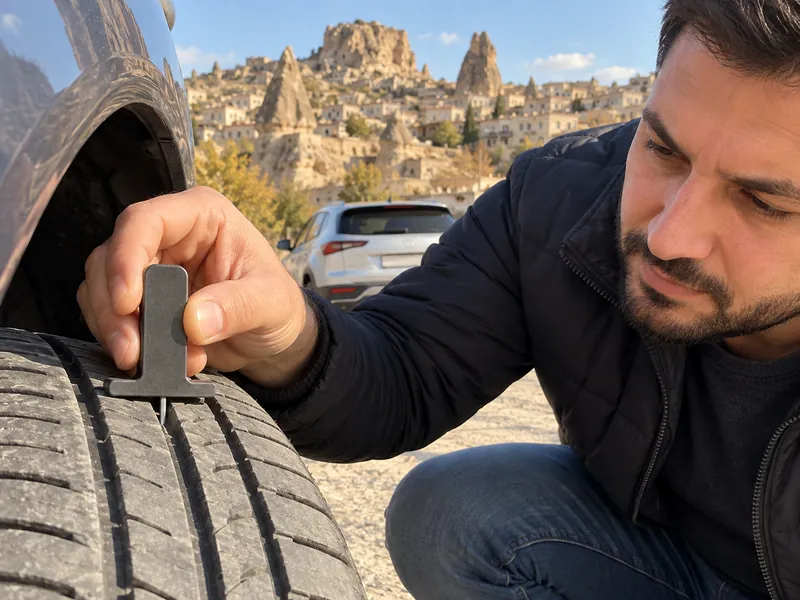

Araç TekniğiKonu 8 / 1022 çıkmış soru
Lastikler ve tekerlekler
Lastiklerin görevlerini, hava basıncı ve diş derinliği kontrolünü, yanlış basıncın ve balanssızlığın etkilerini, kış koşullarında lastik ve zincir kullanımını ve lastik değiştirme adımlarını anlatır.

1Konu anlatımı
Akılda kalsın
- Lastik kontrolünde hava basıncı, diş derinliği ve hasar birlikte değerlendirilir; kontrol araca her binişte yapılır.
- Düşük hava basıncı yakıt tüketimini artırır; aşırı basınç sürüş konforunu azaltır ve lastiği ortadan aşındırır.
- Ön lastiklerin basıncı eşit değilse araç düz yolda bir tarafa çeker, frenlemede de bir yana kayar.
- Balanssız tekerlek belli bir hızdan sonra direksiyonda ve araçta titreşim yapar, tekerlek yataklarını kısa sürede aşındırır.
- Eski ve aşınmış lastikler yağışlı havalarda kaza riskini artırır.
- Patinaj zinciri motordan güç alan çekici tekerleklerin ikisine birden takılır.
- Lastik sökerken sıra: güvenlik önlemi – jant kapağı – bijonları gevşetme – kriko ile kaldırma – bijonları sökme.
Lastiklerin görevleri
Aracın yolla temas eden tek parçası lastiklerdir. Lastikler aracın ağırlığını taşır, direksiyonla verilen yönü izler, yoldan gelen darbe ve titreşimleri azaltır ve yola tutunarak hızlanmaya ve frenlemeye yardımcı olur. Bu nedenle lastiklerin durumu güvenliği doğrudan etkiler: sağlam bir lastik frenleme performansını artırır, aşınmış ya da yanlış şişirilmiş lastik ise düşürür.
Lastik kontrolü
Lastikler araca her binişte, yola çıkmadan önce gözden geçirilir. Kontrolde üç unsur birlikte değerlendirilir: hava basıncı, diş derinliği ve kesik, şişlik, çatlak gibi hasarlar. Bunlardan biri bile kusurluysa yol tutuşu bozulur.
- Hava basıncı: Aracın üreticisinin önerdiği değerde olmalıdır; bu değer kullanma kılavuzunda ve çoğu araçta sürücü kapısı kenarındaki etikette yazar. Basınç lastikler soğukken ölçülür ve aynı akstaki sağ ve sol lastikler eşit tutulur.
- Diş derinliği: Lastik dişleri ıslak zeminde suyu lastiğin altından tahliye eder. Dişleri aşınmış eski lastik suyu atamaz ve yola tutunamaz; kayma riski artar, fren mesafesi uzar. Bu yüzden eski ve aşınmış lastikler özellikle yağışlı havalarda kaza tehlikesini artırır. Otomobillerde yasal en düşük diş derinliği 1,6 mm'dir; lastiklerin bu sınıra gelmeden değiştirilmesi daha güvenlidir.
- Lastik tipi ve ebadı: Üreticinin önerdiği tip ve ebatta lastik kullanılır. Önerilmeyen lastik aracın dengesini bozar ve yakıt tüketimini artırır.
Lastik basıncı izleme sistemi bulunan araçlarda bu ikaz ışığı, lastiklerden birinin basıncının düştüğünü bildirir; lastikler en kısa sürede kontrol edilmelidir.
Yanlış hava basıncının etkileri
| Durum | Sonuç |
|---|---|
| Basınç düşük (yetersiz şişirilmiş) | Yola temas yüzeyi ve yuvarlanma direnci artar, motor zorlanır ve yakıt tüketimi artar; lastik kenarlardan aşınır ve ısınır. |
| Basınç yüksek (aşırı şişirilmiş) | Lastik sertleşir, yol darbelerini sönümleyemez ve sürüş konforu azalır; temas alanı küçülür, lastik ortadan aşınır. |
| Sağ ve sol basınçlar farklı | Düz yolda araç basıncı düşük olan tarafa çeker; fren yapıldığında araç bir tarafa çeker ve dengesi bozulur. |
Balans
Lastik ve jantın ağırlığı tekerlek çevresine dengeli dağılmamışsa tekerlek balanssız olur. Balanssız tekerlek dönerken sallanır ve düz yolda belli bir hızdan sonra direksiyonda ve araçta titreşime yol açar. Bu titreşim tekerlek yataklarının, rot başlarının, süspansiyon parçalarının ve lastiğin kısa sürede aşınmasına neden olur. Çözüm balans ayarıdır; lastik değişiminden veya tamirinden sonra balans yaptırılır. Balanssızlığın motor hararetiyle bir ilgisi yoktur.
Kış koşulları
Kış lastiği, soğukta sertleşmeyen hamuru ve özel diş yapısı sayesinde soğuk, karlı ve buzlu zeminde daha iyi tutunur; yanağındaki M+S işaretinden veya dağ ve kar tanesi simgesinden tanınır. Kar ve buzla kaplı yol kesimlerinde kaymayı önlemek için patinaj (kar) zinciri, motordan güç alan çekici tekerleklerin ikisine birden takılır. Zincir tek tekerleğe takılırsa araç dengesiz çeker ve savrulabilir. Aracı kışa hazırlarken lastik kontrolü, akü ve antifriz kontrolleriyle birlikte yapılır.
Lastik değiştirme
- Araç trafiği engellemeyecek, düz ve sağlam bir zemine çekilir; acil uyarı (dörtlü ikaz) lambaları yakılır.
- Aracın hareket etmemesi için güvenlik önlemleri alınır: el freni çekilir, araç vitese takılır ve gerekirse yerde kalan tekerleklerin önüne ve arkasına takoz konur. Takoz, kriko ile kaldırma sırasında aracın kaymasını veya yuvarlanmasını engeller.
- Jant kapağı çıkarılır.
- Bijon somunları araç henüz yerdeyken gevşetilir; havadaki tekerlekte bijonu gevşetmeye çalışılırsa tekerlek döner.
- Araç kriko ile tekerlek yerden kesilecek kadar kaldırılır.
- Bijon somunları sökülür ve tekerlek çıkarılır.
- Yedek tekerlek takılır, bijonlar önce elle oturtulur; araç indirildikten sonra çapraz sırayla sıkılır.
2Bu konunun soruları
MEB sınavlarında bu konudan çıkmış 22 soru (2 tanesi en az üç sınavda soruldu). Her soruda doğru cevabı ve açıklamasını hemen görürsünüz.
Hangi sorular?
Sıralama